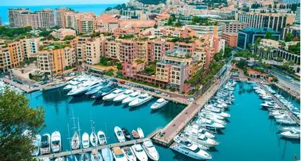
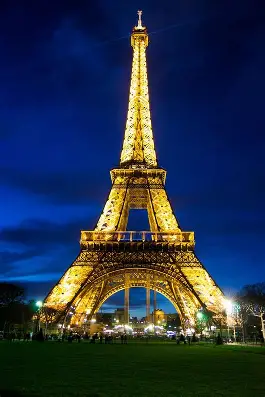
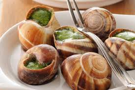

A França é considerada um dos países mais seguros da Europa em diversos aspectos, especialmente pela forte atuação de suas forças policiais e pelos investimentos em segurança pública e tecnologia. Grandes cidades como Paris possuem monitoramento por câmeras, policiamento frequente e sistemas eficientes de transporte e emergência.
A França é um dos destinos turísticos mais visitados do mundo, oferecendo atividades para todos os estilos de viajantes. Em Paris, os turistas podem visitar monumentos famosos como a Torre Eiffel, o Museu do Louvre e a Catedral de Notre-Dame, além de aproveitar cafés, passeios de barco pelo Rio Sena e a vida cultural da cidade.Além da capital, a França possui regiões encantadoras para explorar.
A França possui tradições culturais muito ricas, que refletem sua história, arte e estilo de vida. A gastronomia é uma das principais tradições do país, com o costume de valorizar refeições longas em família, acompanhadas de queijos, vinhos e pratos típicos regionais. As padarias francesas também fazem parte do cotidiano, especialmente pelo famoso pão baguete e pelos croissants.

Monaco

Torre Eiffel
Museu do Louvre

A França é um dos países europeus que mais investem em tecnologia, inovação e pesquisa científica. O país possui empresas e centros de desenvolvimento reconhecidos mundialmente nas áreas de inteligência artificial, energia, transporte, aviação e telecomunicações. Além disso, o governo francês incentiva startups e projetos tecnológicos por meio de investimentos e programas de inovação.
A França possui um dos sistemas de saúde mais reconhecidos do mundo, oferecendo atendimento de qualidade para a população por meio de serviços públicos e privados. O país investe fortemente em hospitais, tecnologia médica, pesquisas científicas e formação de profissionais da saúde, garantindo acesso eficiente a tratamentos e cuidados médicos.
Por que viajar para o Canada